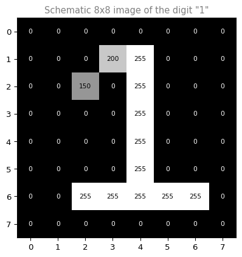
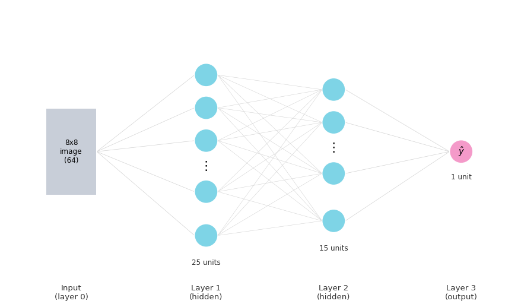
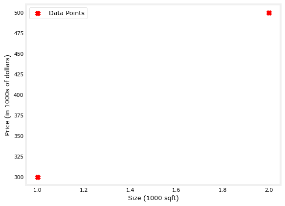
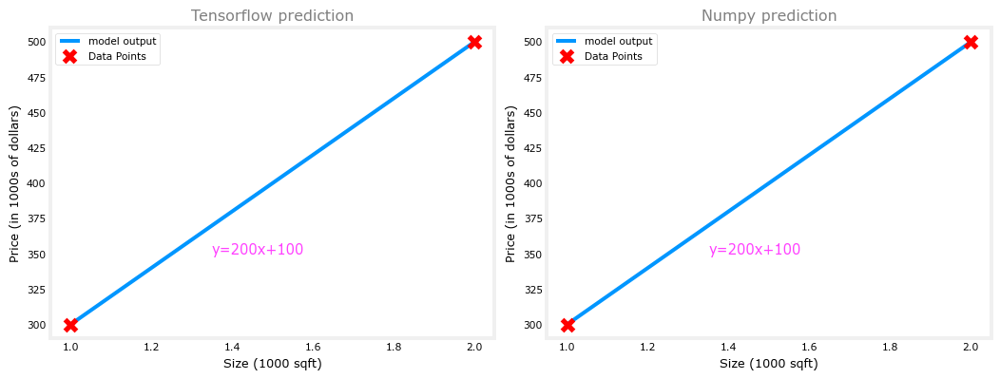
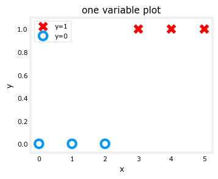
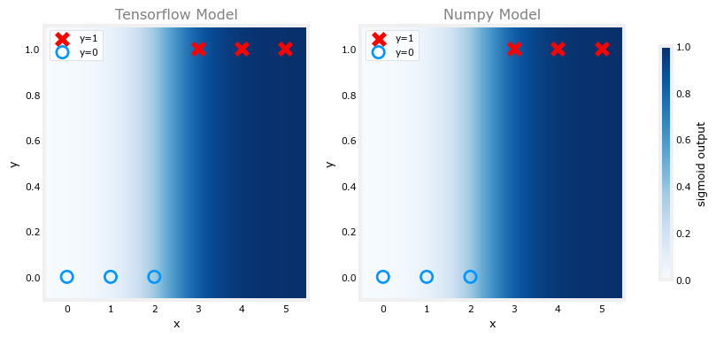

Forward Propagation
machine-learning
neural-networks
The forward propagation algorithm for neural network inference, worked through a handwritten digit recognition example with a 64-25-15-1 network.
You now know the general formula for a single neuron in any layer. This page puts that formula to work in a full algorithm for making predictions, called forward propagation.
Handwritten Digit Recognition
The motivating example is handwritten digit recognition, the same kind of task a scanner uses to read handwritten zip codes on mail. A real digit recognizer usually has to tell apart all ten digits, 0 through 9. To keep the math easy to follow for now, the network in this example distinguishes only between the digits zero and one. That makes it a binary classification problem, the same kind of yes-or-no problem you saw with logistic regression. The input is an image, and the output is a prediction of whether the image shows a 0 or a 1. Once you understand this small version, the same ideas scale up to recognizing all ten digits, or far more complicated images.
You will build this exact network yourself, layer by layer, in the lab at the end of this page.
Review Questions
1. What are the two classes in this digit recognition example?
TipAnswer
The digit 0 and the digit 1.
1. Why does this example only use two digits instead of all ten?
TipAnswer
To keep the example simple while you learn the forward propagation algorithm. A real digit recognizer would need to classify all ten digits, but the same layer-by-layer math works either way.
Eight-by-Eight Pixel Image
Before a neural network can look at a picture, that picture has to become a list of numbers. Computers cannot see shapes the way people do. They only work with numbers, so every image fed into a network first gets turned into a grid of numbers, one number per tiny square called a pixel. You already saw this idea on the intuition page, where a photograph became a large table of brightness values.
The example image here is much smaller than that photograph. It is 8 pixels wide and 8 pixels tall, an 8-by-8 grid. Multiplying \(8 \times 8\) gives 64 pixel intensity values total, one number per square in the grid. Each of those 64 numbers is a brightness value. A value of 255 means a bright white pixel, 0 means a completely black pixel, and every number in between is some shade of gray. A pixel with value 128, for example, would be a medium gray, roughly halfway between black and white.
The schematic grid below sketches out what an image of the digit “1” might look like at this tiny 8-by-8 resolution. Most pixels are 0 (black background), while the pixels that trace the shape of the “1” are closer to 255 (white or light gray).
Just like the face photograph on the intuition page got unrolled row by row into one long list of numbers, this 8-by-8 grid unrolls into a single vector \(\vec{x}\) with 64 entries, one entry per pixel. That vector of 64 numbers is exactly the input \(\vec{x}\) that flows into the network’s first layer.
Given these 64 input features, this example uses a network with two hidden layers, which is one more hidden layer than the T-shirt demand example on the intuition page, which only had one. The first hidden layer has 25 units, the second hidden layer has 15 units, and the output layer has a single unit. That single output unit reports one number, the chance that the digit in the image is a 1 rather than a 0.
The diagram below sketches the whole network from left to right. The gray block on the left stands in for all 64 input numbers at once, since drawing 64 separate circles would be hard to read. Each cyan circle in the two hidden layers is a single neuron running the same sigmoid formula you already know, just with its own weights and bias. The final magenta circle is the one output neuron, whose activation is written \(\hat{y}\).

Review Questions
1. How many input features does the network read?
TipAnswer
64, one per pixel in the 8x8 image.
1. How many units are in the first and second hidden layers?
TipAnswer
The first hidden layer has 25 units. The second hidden layer has 15 units.
1. What does the single output unit report?
TipAnswer
The chance that the input image is the digit 1 versus the digit 0.
1. How does the 8-by-8 grid of pixel brightness values become the input vector \(\vec{x}\)?
TipAnswer
The grid is unrolled row by row into one long list of numbers, the same way the face photograph was unrolled on the intuition page. Each of the 64 pixels becomes one entry in \(\vec{x}\).
Computing the Output Layer
The final step computes \(a^{[3]}\) using the same kind of computation. This third layer, the output layer, has just one unit, so \(a^{[3]}\) is a single scalar rather than a vector.
\[ a^{[3]} = g\!\left(\vec{w}_1^{[3]} \cdot \vec{a}^{[2]} + b_1^{[3]}\right) \]
You can optionally threshold \(a^{[3]}\) at 0.5 to get a binary classification label.
\[ \hat{y} = \begin{cases} 1 & \text{if } a^{[3]} \geq 0.5 \\ 0 & \text{if } a^{[3]} < 0.5 \end{cases} \]
Review Questions
1. Why is \(a^{[3]}\) a scalar instead of a vector?
TipAnswer
Because the output layer has only one unit.
1. What threshold turns \(a^{[3]}\) into a binary label \(\hat{y}\)?
TipAnswer
0.5. If \(a^{[3]} \geq 0.5\), predict \(\hat{y} = 1\). Otherwise predict \(\hat{y} = 0\).
1. For the handwriting recognition task, what is the output \(a_1^{[3]}\), before any thresholding?
(A) A vector of several numbers, each of which is either exactly 0 or 1
(B) A number that is either exactly 0 or 1, comprising the network’s prediction
(C) A vector of several numbers that take values between 0 and 1
(D) The estimated probability that the input image is of a number 1, a number that ranges from 0 to 1
TipAnswer
(D) is correct. \(a_1^{[3]}\) is the raw sigmoid output of the single output unit, a probability between 0 and 1, not yet rounded to a hard label.
Options (A) and (C) are wrong because the output layer has only one unit, so \(a_1^{[3]}\) is a single scalar, not a vector.
Option (B) describes \(\hat{y}\), the label you get after thresholding \(a^{[3]}\) at 0.5, not \(a^{[3]}\) itself.
Network Output as f(x)
The sequence of computations first takes \(\vec{x}\), then computes \(\vec{a}^{[1]}\), then \(\vec{a}^{[2]}\), then \(a^{[3]}\), which is also the output of the neural network. You can also write this as \(f(\vec{x})\).
In linear regression and logistic regression, \(f_{\vec{w},b}(\vec{x})\) denoted the model output. The same idea carries over here. \(f(\vec{x})\) denotes the function computed by the whole neural network as a function of \(\vec{x}\).
Review Questions
1. What does \(f(\vec{x})\) refer to for a neural network?
TipAnswer
The output of the whole network, computed by chaining every layer, from \(\vec{x}\) through the last activation.
Forward Propagation
This computation goes from left to right: start from \(\vec{x}\), compute \(\vec{a}^{[1]}\), then \(\vec{a}^{[2]}\), then \(a^{[3]}\). This algorithm is called forward propagation, because the activations of the neurons are propagated in the forward direction, from left to right.
This is in contrast to a different algorithm called backward propagation, or backpropagation, which is used for learning rather than inference.
Review Questions
1. Why is this algorithm called forward propagation?
TipAnswer
Because activations are computed left to right, layer by layer, from the input toward the output.
1. Is backpropagation used for inference or for learning?
TipAnswer
Learning. Forward propagation is used for inference.
Typical Architecture Shape
This network has more hidden units in the first hidden layer (25) than in the second (15), and fewer still at the output (1). Having more hidden units early, with the number of hidden units decreasing as you get closer to the output layer, is a fairly typical choice when choosing a neural network architecture.
Review Questions
1. In this network, does the number of hidden units increase or decrease toward the output layer?
TipAnswer
It decreases: 25 units, then 15 units, then 1 output unit. That shape is a common architecture choice.
Inference With Trained Parameters
This is neural network inference using the forward propagation algorithm, the same inference versus training distinction introduced earlier in the course. With forward propagation, you could download the parameters of a neural network that someone else already trained and posted online, and use their network to make predictions on your own new data.
Review Questions
1. What do you need to run forward propagation on new data?
TipAnswer
A set of trained parameters (\(\vec{w}\) and \(b\) for every neuron), which could come from your own training or from someone else’s already-trained network.
Lab: Neurons and Layers
In this lab, you will build single neurons directly in code and compare them to the linear and logistic regression models from Course 1. The lab uses TensorFlow, a machine learning library built by Google, and its Keras interface, which gives a simple, layer-centric way to build models. This course uses the Keras interface throughout.
Setup
import numpy as np
import matplotlib.pyplot as plt
import tensorflow as tf
from tensorflow.keras.layers import Dense, Input
from tensorflow.keras import Sequential
plt.style.use("../../deeplearning.mplstyle")
import logging
logging.getLogger("tensorflow").setLevel(logging.ERROR)
tf.autograph.set_verbosity(0)numpy handles arrays and math, matplotlib draws plots, and tensorflow provides the Dense layer you will use to build a single neuron. The last three lines just quiet down TensorFlow’s informational logging so the lab output stays readable.
Two small plotting functions are used later in this lab. Their job is just to draw the comparison charts, not to teach anything new about neurons, so their implementation is collapsed here. You only need to call them.
NotePlotting helper functions
def plot_linear_predictions(X_train, Y_train, w, b, prediction_tf, prediction_np):
fig, axes = plt.subplots(1, 2, figsize=(11, 4.2))
for ax, pred, title in zip(
axes, [prediction_tf, prediction_np], ["Tensorflow prediction", "Numpy prediction"]
):
ax.plot(X_train.flatten(), np.array(pred).flatten(),
color="#0096FF", linewidth=3, label="model output", zorder=2)
ax.scatter(X_train.flatten(), Y_train.flatten(),
marker="x", c="red", s=80, label="Data Points", zorder=3)
ax.text(1.35, 350, f"y={w:.0f}x+{b:.0f}", color="#FF40FF", fontsize=11)
ax.set_title(title, fontsize=12, color="gray")
ax.set_xlabel("Size (1000 sqft)")
ax.set_ylabel("Price (in 1000s of dollars)")
ax.legend()
plt.tight_layout()
plt.show()
def plot_sigmoid_predictions(X_train, Y_train, w, b):
pos = Y_train.flatten() == 1
neg = Y_train.flatten() == 0
xx = np.linspace(-0.5, 5.5, 200)
yy = np.linspace(-0.1, 1.1, 200)
XX, YY = np.meshgrid(xx, yy)
Z = 1 / (1 + np.exp(-(w * XX + b)))
fig, axes = plt.subplots(1, 2, figsize=(11, 4.2))
for ax, title in zip(axes, ["Tensorflow Model", "Numpy Model"]):
im = ax.pcolormesh(XX, YY, Z, cmap="Blues", shading="auto", vmin=0, vmax=1, zorder=1)
ax.scatter(X_train.flatten()[pos], Y_train.flatten()[pos],
marker="x", s=100, c="red", label="y=1", zorder=3)
ax.scatter(X_train.flatten()[neg], Y_train.flatten()[neg],
marker="o", s=100, facecolors="none", edgecolors="#0096FF",
linewidths=2, label="y=0", zorder=3)
ax.set_title(title, fontsize=12, color="gray")
ax.set_xlabel("x")
ax.set_ylabel("y")
ax.legend()
fig.colorbar(im, ax=axes, shrink=0.85, label="sigmoid output")
plt.show()Neuron Without Activation: Linear Regression
The function computed by a neuron with no activation function is the same as linear regression:
\[ f_{w,b}(x^{(i)}) = w \cdot x^{(i)} + b \]
This is the same two-point housing dataset used in the Linear Regression lab: size in units of 1000 sqft, price in units of $1000. TensorFlow layers expect 2D input, one row per example and one column per feature, so the arrays are shaped as \((2, 1)\) instead of the flat \((2,)\) shape used earlier.
X_train = np.array([[1.0], [2.0]], dtype=np.float32) # size in 1000 sqft
Y_train = np.array([[300.0], [500.0]], dtype=np.float32) # price in 1000s of dollars
fig, ax = plt.subplots(1, 1)
ax.scatter(X_train, Y_train, marker="x", c="r", label="Data Points")
ax.legend(fontsize="large")
ax.set_ylabel("Price (in 1000s of dollars)")
ax.set_xlabel("Size (1000 sqft)")
plt.show()
A Dense layer with activation='linear' and one unit is exactly this formula: one weight, one bias, no sigmoid.
linear_layer = tf.keras.layers.Dense(units=1, activation="linear")
linear_layer.get_weights()[]The result is an empty list. A Keras layer does not create its weights until it sees an input for the first time, since it needs to know how many numbers are in that input. Calling the layer on one example triggers this build step.
a1 = linear_layer(X_train[0].reshape(1, 1))
print(a1)tf.Tensor([[0.0297091]], shape=(1, 1), dtype=float32)w, b = linear_layer.get_weights()
print(f"w = {w}, b = {b}")w = [[0.0297091]], b = [0.]The weights start out as small random numbers, and the bias starts at zero. To compare the layer directly against a known linear regression solution, set the weight and bias by hand to the values you already found in the Linear Regression lab, \(w = 200\), \(b = 100\).
set_w = np.array([[200]])
set_b = np.array([100])
linear_layer.set_weights([set_w, set_b])
print(linear_layer.get_weights())[array([[200.]], dtype=float32), array([100.], dtype=float32)]Now compare the layer output to the same computation done by hand with NumPy, \(w \cdot x + b\).
a1 = linear_layer(X_train[0].reshape(1, 1))
print(a1)
alin = np.dot(set_w, X_train[0].reshape(1, 1)) + set_b
print(alin)tf.Tensor([[300.]], shape=(1, 1), dtype=float32)
[[300.]]They produce the same value. The Dense layer with a linear activation is doing nothing more than \(w \cdot x + b\), just wrapped inside TensorFlow. Now run predictions on the full training set and plot the TensorFlow output next to the plain NumPy output.
prediction_tf = linear_layer(X_train)
prediction_np = np.dot(X_train, set_w) + set_b
plot_linear_predictions(X_train, Y_train, 200, 100, prediction_tf, prediction_np)
Both panels show the same line, \(y = 200x + 100\), passing exactly through both data points.
Neuron With Sigmoid Activation: Logistic Regression
The function computed by a neuron with a sigmoid activation is the same as logistic regression:
\[ f_{w,b}(x^{(i)}) = g\!\left(w \cdot x^{(i)} + b\right), \qquad g(z) = \text{sigmoid}(z) \]
This lab switches to a new, small dataset for classification: \(x\) ranges from 0 to 5, and \(y\) is 0 for the first three examples and 1 for the last three.
X_train = np.array([0., 1, 2, 3, 4, 5], dtype=np.float32).reshape(-1, 1)
Y_train = np.array([0, 0, 0, 1, 1, 1], dtype=np.float32).reshape(-1, 1)
pos = Y_train.flatten() == 1
neg = Y_train.flatten() == 0
fig, ax = plt.subplots(1, 1, figsize=(4, 3))
ax.scatter(X_train[pos], Y_train[pos], marker="x", s=80, c="red", label="y=1")
ax.scatter(X_train[neg], Y_train[neg], marker="o", s=100, label="y=0",
facecolors="none", edgecolors="#0096FF", lw=3)
ax.set_ylim(-0.08, 1.1)
ax.set_ylabel("y")
ax.set_xlabel("x")
ax.set_title("one variable plot")
ax.legend()
plt.show()
A single logistic neuron is built the same way, but with activation='sigmoid'. This section wraps the layer inside a Sequential model, the standard Keras container for stacking layers, even though there is only one layer here.
model = Sequential([
Input(shape=(1,)),
Dense(1, activation="sigmoid", name="L1")
])
model.summary()Model: "sequential"
┏━━━━━━━━━━━━━━━━━━━━━━━━━━━━━━━━━┳━━━━━━━━━━━━━━━━━━━━━━━━┳━━━━━━━━━━━━━━━┓ ┃ Layer (type) ┃ Output Shape ┃ Param # ┃ ┡━━━━━━━━━━━━━━━━━━━━━━━━━━━━━━━━━╇━━━━━━━━━━━━━━━━━━━━━━━━╇━━━━━━━━━━━━━━━┩ │ L1 (Dense) │ (None, 1) │ 2 │ └─────────────────────────────────┴────────────────────────┴───────────────┘
Total params: 2 (8.00 B)
Trainable params: 2 (8.00 B)
Non-trainable params: 0 (0.00 B)
model.summary() shows one layer named L1 with one unit. That unit has 2 parameters, \(w\) and \(b\), matching the single-neuron formula above.
logistic_layer = model.get_layer("L1")
w, b = logistic_layer.get_weights()
print(w, b)
print(w.shape, b.shape)[[0.3668741]] [0.]
(1, 1) (1,)As before, these start as small random numbers. Set them by hand to known values, \(w = 2\), \(b = -4.5\).
set_w = np.array([[2]])
set_b = np.array([-4.5])
logistic_layer.set_weights([set_w, set_b])
print(logistic_layer.get_weights())[array([[2.]], dtype=float32), array([-4.5], dtype=float32)]With \(w = 2\) and \(b = -4.5\), the decision boundary sits where \(2x - 4.5 = 0\), at \(x = 2.25\). That lines up with the training data: \(x = 0, 1, 2\) are labeled 0 (below 2.25) and \(x = 3, 4, 5\) are labeled 1 (above 2.25).
Now compare the model’s prediction to the same computation done by hand with NumPy’s sigmoid.
def sigmoid_np(z):
return 1 / (1 + np.exp(-z))
a1 = model.predict(X_train[0].reshape(1, 1), verbose=0)
print(a1)
alog = sigmoid_np(np.dot(set_w, X_train[0].reshape(1, 1)) + set_b)
print(alog)[[0.01098694]]
[[0.01098694]]They produce the same value. Now plot the decision function for both the TensorFlow model and the NumPy computation. The shading reflects the sigmoid output, which varies smoothly from 0 to 1.
plot_sigmoid_predictions(X_train, Y_train, 2, -4.5)
Summary
In this lab you learned:
- A
Denselayer withactivation='linear'and one unit computes exactly the same thing as linear regression: \(f_{w,b}(x) = wx + b\). - A
Denselayer withactivation='sigmoid'and one unit computes exactly the same thing as logistic regression: \(f_{w,b}(x) = g(wx + b)\). - A Keras layer does not create its weights until it has seen an input once, since it needs to know the input size first.
set_weights()lets you assign known parameter values directly, which is a useful way to check that a layer’s math matches a hand-computed formula.
Review Questions
1. Why is linear_layer.get_weights() an empty list right after creating the layer?
TipAnswer
The layer has not been built yet. A Keras layer only creates its weight and bias once it sees an input, because it needs to know the input size first.
1. What activation function turns a Dense layer into a logistic regression unit?
TipAnswer
activation='sigmoid'. With one unit, this computes \(g(wx + b)\), the same formula as logistic regression.
1. With \(w = 2\) and \(b = -4.5\), at what value of \(x\) does the decision boundary sit, and why?
TipAnswer
\(x = 2.25\), because the boundary is where \(wx + b = 0\), so \(2x - 4.5 = 0 \Rightarrow x = 2.25\).